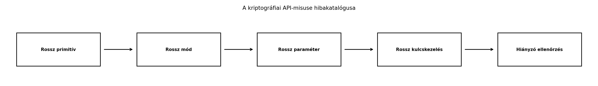

A kriptográfiai katasztrófák leggyakoribb forrása nem a matematikai törés, hanem a hibás programozói hívás: a fejlesztő jó szándékkal, de rossz paraméterrel vagy rossz primitívvel hív meg egy könyvtárat. Ezt nevezzük API-misuse-nak, azaz alkalmazásprogramozási interfész helytelen használatának. A jelenség azért különösen veszélyes, mert a kód sokszor lefut, a tesztek zöldek, a titkosított adat még csak visszafejthető – csak éppen nem nyújt biztonságot. Egy tipikus példa: a fejlesztő AES-t akar használni, keres egy rövid példát, lemásolja, és az eredmény ECB üzemmódot és statikus IV-t tartalmaz. A program működik, de a támadó számára a titkosított fájl gyakorlatilag olvasható.
Ebben az alfejezetben rendszerezzük a leggyakoribb hibákat, mindegyikhez hibás és javított Python-kódpárt adunk, majd egy összetett példán keresztül bemutatjuk a javítás folyamatát. A cél nem a kódtár dokumentációjának reprodukálása, hanem az, hogy a tanuló felismerje a hibamintákat, és tudja, milyen magas szintű API-kkal kerülheti el őket.
A hibákat öt nagy kategóriába soroljuk, amelyek a fejlesztői döntések különböző szintjein jelentkeznek. A következő folyamatábra a katalógus szerkezetét mutatja; a későbbiekben minden dobozhoz konkrét kódpélda tartozik.

A kategóriák lefedik a tipikus hibákat: hash használata MAC-ként, ECB
üzemmód, statikus nonce, jelszó közvetlen kulcsként, MAC-összehasonlítás
==-vel, tanúsítvány-ellenőrzés kikapcsolása, beégetett
kulcs, illetve padding nélküli RSA. A katalógust a későbbi alfejezetek –
különösen a Könyvtárválasztás, auditálás,
tesztvektorok és fuzzing, az 1. projekt:
fájltitkosító eszköz AEAD-dal és jelszóból származtatott kulccsal és
az A kriptográfia fogalmi térképe és döntési
fája – is használni fogják ellenőrzőlistaként.
Definíció. Kriptográfiai API-misuse alatt olyan programozási hibát értünk, amikor egy kriptográfiai könyvtár függvényét a specifikációjától eltérő, nem biztonságos módon hívjuk meg, vagy olyan primitívet választunk, amely nem alkalmas az adott biztonsági célra. A hiba következménye általában csökkent vagy megszűnő biztonság, miközben a program funkcionálisan továbbra is működik.
Az alábbiakban minden kategóriához egy-egy rövid, valósághű
Python-kódot mutatunk. A hibás változatokat # HIBÁS
megjegyzéssel jelöljük, és szándékosan gyengék; a javított változatok a
cryptography csomag vagy a Python standard könyvtárának
biztonságos részeit használják. Éles környezetben mindig a magas szintű
API-kat részesítsük előnyben.
A fejlesztő gyakran gondolja, hogy a hash-függvény titkos kulccsal
kombinálva hitelesítést ad. A sha256(kulcs + üzenet)
azonban nem biztonságos MAC, mert a hosszkiterjesztéses támadással a
kulcs ismerete nélkül hamisítható. A helyes primitív a HMAC.
# HIBÁS: hash mint MAC
import hashlib
kulcs = b"titkos_kulcs"
uzenet = b"fizetes: 100"
tag = hashlib.sha256(kulcs + uzenet).hexdigest()
# A támadó hosszkiterjesztéssel további üzenetrészt fűzhet, és új tagot számol.# JAVÍTOTT: HMAC
import hmac
import hashlib
kulcs = b"titkos_kulcs"
uzenet = b"fizetes: 100"
tag = hmac.new(kulcs, uzenet, hashlib.sha256).hexdigest()Az AES-ECB determinisztikus, azonos blokkok azonos rejtett blokkokat adnak, ezért a mintázatok láthatók maradnak. A javítás az AEAD üzemmód, például AES-GCM, amely titkosítást és hitelesítést együtt nyújt.
# HIBÁS: AES-ECB, ráadásul nincs hitelesítés
from cryptography.hazmat.primitives.ciphers import Cipher, algorithms, modes
kulcs = b"0123456789abcdef" # 16 bájt, de élesben ne így válasszuk
cipher = Cipher(algorithms.AES(kulcs), modes.ECB())
# titkosítás...
# A titkosított szöveg nem hitelesített, és a blokkmintázat látható.# JAVÍTOTT: AES-GCM véletlen nonce-szal
from cryptography.hazmat.primitives.ciphers.aead import AESGCM
import secrets
kulcs = secrets.token_bytes(32) # 256 bites kulcs
nonce = secrets.token_bytes(12) # 96 bites nonce
aesgcm = AESGCM(kulcs)
rejtett = aesgcm.encrypt(nonce, b"titkos adat", None)
# A rejtett szöveg magában foglalja a hitelesítő címkét is.A CTR, GCM vagy ChaCha20 üzemmódok megkövetelik, hogy ugyanaz a kulcs mellett a nonce soha ne ismétlődjön. A statikus nonce katasztrofális: GCM-ben például a hitelesítő kulcs kiszivárog.
# HIBÁS: rögzített nonce
from cryptography.hazmat.primitives.ciphers.aead import ChaCha20Poly1305
kulcs = b"0123456789abcdef0123456789abcdef"
nonce = b"123456789012" # statikus nonce
chacha = ChaCha20Poly1305(kulcs)
r1 = chacha.encrypt(nonce, b"elso uzenet", None)
r2 = chacha.encrypt(nonce, b"masodik uzenet", None)
# A nonce-újrahasználat miatt a támadó XOR-ral kombinálhatja a két rejtett szöveget.# JAVÍTOTT: minden üzenethez friss, véletlen nonce
import secrets
from cryptography.hazmat.primitives.ciphers.aead import ChaCha20Poly1305
kulcs = secrets.token_bytes(32)
chacha = ChaCha20Poly1305(kulcs)
nonce1 = secrets.token_bytes(12)
r1 = chacha.encrypt(nonce1, b"elso uzenet", None)
nonce2 = secrets.token_bytes(12)
r2 = chacha.encrypt(nonce2, b"masodik uzenet", None)A forráskódba égetett kulcs vagy a jelszó közvetlen kulcsként való
használata a leggyakoribb kulcskezelési hibák közé tartozik. A jelszóból
kulcsszármaztatásra szándékosan lassú, memóriaigényes jelszó-KDF-et
(Argon2id, scrypt, végszükség esetén PBKDF2) kell használni; a HKDF erre
nem alkalmas, mert gyors: csak nagy entrópiájú kulcsanyagból (pl.
DH-titokból) való származtatásra való. A kulcsot pedig
secrets modullal kell generálni.
# HIBÁS: beégetett kulcs és jelszó közvetlen használata
import hashlib
jelszo = b"titkos_jelszo"
kulcs = hashlib.sha256(jelszo).digest() # gyors, nem sózott, nem KDF
# Ráadásul a kulcs a kódban van.# JAVÍTOTT: Scrypt vagy Argon2 jelszó-hash, kulcsgenerálás secrets-szel
from cryptography.hazmat.primitives.kdf.scrypt import Scrypt
from cryptography.hazmat.primitives import hashes
import secrets
import os
salt = secrets.token_bytes(16)
kdf = Scrypt(salt=salt, length=32, n=2**14, r=8, p=1)
kulcs = kdf.derive(b"titkos_jelszo")
# A kulcs soha ne legyen a kódban; tároljuk kulcstartóban vagy HSM-ben.==-velA MAC- vagy hash-összehasonlítás Pythonban a ==
operátorral időzítési oldalcsatornát nyit: a futásidő attól függ, hány
bájt egyezik meg. A támadó ebből bájtonként kinyerheti a helyes címkét.
A konstans idejű összehasonlításhoz a hmac.compare_digest
használandó.
# HIBÁS: == operátor MAC-összehasonlításra
import hmac, hashlib
kulcs = b"titkos"
uzenet = b"adat"
kapott_tag = bytes(32) # a hálózatról érkező címke helyett tesztérték
szamitott_tag = hmac.new(kulcs, uzenet, hashlib.sha256).digest()
if kapott_tag == szamitott_tag:
print("OK") # időzítési támadásnak kitéve# JAVÍTOTT: konstans idejű összehasonlítás
import hmac, hashlib
kulcs = b"titkos"
uzenet = b"adat"
kapott_tag = bytes(32) # a hálózatról érkező címke helyett tesztérték
szamitott_tag = hmac.new(kulcs, uzenet, hashlib.sha256).digest()
if hmac.compare_digest(kapott_tag, szamitott_tag):
print("OK")A padding nélküli RSA (c = m^e mod N) determinisztikus
és malleábilis, ezért közvetlenül nem használható titkosításra vagy
aláírásra. A javítás az OAEP vagy PSS padding használata a
cryptography csomagban.
# HIBÁS: textbook RSA (csak szemléltetés, NEM ÉLES HASZNÁLATRA)
n = 3233 # kis prímek szorzata, példa
e = 17
m = 65
c = pow(m, e, n)
# A támadó szorzási malleabilitással módosíthatja az üzenetet.# JAVÍTOTT: RSA-OAEP a cryptography csomaggal
from cryptography.hazmat.primitives.asymmetric import rsa, padding
from cryptography.hazmat.primitives import hashes
privat_kulcs = rsa.generate_private_key(public_exponent=65537, key_size=2048)
nyilvanos_kulcs = privat_kulcs.public_key()
rejtett = nyilvanos_kulcs.encrypt(
b"titkos",
padding.OAEP(mgf=padding.MGF1(algorithm=hashes.SHA256()), algorithm=hashes.SHA256(), label=None)
)Tekintsünk egy tipikus, Stack Overflow-ról másolt függvényt, amely egy fájlt akar titkosítani jelszóval. A kód több hibát is tartalmaz egyszerre:
# HIBÁS fájltitkosító – OKTATÁSI CÉLRA, NEM ÉLES HASZNÁLATRA
import hashlib
from cryptography.hazmat.primitives.ciphers import Cipher, algorithms, modes
def titkosit(fajl_ut, jelszo):
kulcs = hashlib.sha256(jelszo.encode()).digest() # hiba 1: KDF hiánya
iv = b"1234567890123456" # hiba 2: statikus IV
cipher = Cipher(algorithms.AES(kulcs), modes.CBC(iv)) # hiba 3: CBC hitelesítés nélkül
# ... fájl beolvasása, padding, titkosítás ...
# hiba 4: a MAC hiányzik, a rejtett szöveg módosítható
return rejtett_adatA hibák és a javítás lépései:
A javított változat a cryptography Fernet API-ját
használhatja, amely mindezeket a részleteket elrejti:
# JAVÍTOTT: Fernet magas szintű API
from cryptography.fernet import Fernet
kulcs = Fernet.generate_key() # 32 véletlen bájt URL-safe base64 kódolva (44 karakter)
f = Fernet(kulcs)
titkos = f.encrypt(b"fajl tartalma")
vissza = f.decrypt(titkos)Ha ragaszkodunk az alacsony szintű AES-GCM-hez, akkor a következő minta a helyes:
# JAVÍTOTT: AES-GCM véletlen nonce-szal és sóval
from cryptography.hazmat.primitives.kdf.scrypt import Scrypt
from cryptography.hazmat.primitives.ciphers.aead import AESGCM
import secrets
def titkosit_aead(jelszo: bytes, adat: bytes) -> bytes:
salt = secrets.token_bytes(16)
kdf = Scrypt(salt=salt, length=32, n=2**14, r=8, p=1)
kulcs = kdf.derive(jelszo)
nonce = secrets.token_bytes(12)
aesgcm = AESGCM(kulcs)
rejtett = aesgcm.encrypt(nonce, adat, None)
return salt + nonce + rejtett # só és nonce a rejtett szöveg előttA függvény a sót és a nonce-ot a rejtett szöveghez csatolja, így a visszafejtéskor rendelkezésre állnak. A hitelesítés beépített a GCM címkéjén keresztül, és a visszafejtés sikertelen, ha az adatot módosították.
A fenti hibák nagy része abból fakad, hogy a fejlesztő alacsony szintű primitíveket próbál összeszerelni. A modern kriptográfiai könyvtárak magas szintű, “csak oda a kulcsot és az üzenetet” API-kat kínálnak, amelyek a helyes üzemmódot, nonce-kezelést és hitelesítést beépítve tartalmazzák. Három fontos példa:
cryptography csomagban):
szimmetrikus hitelesített titkosítás, AES-CBC + HMAC-SHA256,
időbélyeggel. Minden részletet kezel.cryptography csomag AEAD osztályai): egyszerű
encrypt(nonce, data, associated_data) metódus, a nonce-ot a
hívónak kell frissen biztosítania, de a hitelesítés automatikus.SecretBox osztály encrypt és
decrypt metódusai nonce-ot és hitelesítést is kezelnek, a
felhasználónak csak a kulcsot kell megadnia.# PyNaCl SecretBox: a nonce-ot és a MAC-et is kezeli
import nacl.secret
import nacl.utils
kulcs = nacl.utils.random(nacl.secret.SecretBox.KEY_SIZE)
box = nacl.secret.SecretBox(kulcs)
titkos = box.encrypt(b"uzenet")
vissza = box.decrypt(titkos)A magas szintű API-k használata önmagában nem old meg minden problémát – a kulcskezelés, a jelszó-KDF és a tanúsítvány-ellenőrzés továbbra is a fejlesztő felelőssége –, de drasztikusan csökkenti a hibalehetőségek számát.
A kódrecenzió során statikus elemző eszközök is segíthetnek a
kriptográfiai API-misuse felderítésében. A Python ökoszisztémában
például a bandit vagy a semgrep konfigurálható
úgy, hogy jelezze a tiltott hívásokat: hashlib.md5
jelszóra, Cipher(..., modes.ECB()), random
modul használata kulcsgenerálásra, == összehasonlítás
MAC-ellenőrzéskor, illetve a tanúsítvány-ellenőrzés kikapcsolása
(ctx.check_hostname = False,
ctx.verify_mode = ssl.CERT_NONE,
requests.get(..., verify=False)). Bár ezek az eszközök nem
adnak teljes bizonyosságot, a kódrecenziós ellenőrzőlista
kiegészítéseként értékesek. A teljes eszközkézikönyv nem tárgya ennek a
könyvnek, de a gyakorlati munkában érdemes a CI-folyamatba beépíteni
őket.
A témával foglalkozó kutatások – például nyílt forráskódú projektek elemzése alapján – azt találták, hogy a kriptográfiai API-kat használó kódok jelentős része tartalmaz legalább egy misuse-t, leggyakrabban a nem biztonságos üzemmódot, a nem megfelelő kulcsméretet vagy a hiányzó hitelesítést. A pontos arányok és a konkrét esettanulmányok ellenőrzést igényelnek; ebben a könyvben nem állítunk konkrét százalékot, de a tendencia egyértelmű, és a hibakatalógusunk jól illeszkedik a szakirodalomban megfigyelt mintákhoz.
Tegyük fel, hogy egy fejlesztő Pythonban szeretne egy jelszóval védett fájlt titkosítani. Beírja a keresőbe, hogy “AES encryption Python example”, és az első találat egy rövid, népszerű válasz, amely a következőt mutatja:
# Stack Overflow-on talált "egyszerű" példa – ERŐSEN HIBÁS
import hashlib
from cryptography.hazmat.primitives.ciphers import Cipher, algorithms, modes
def encrypt(data, password):
key = hashlib.sha256(password.encode()).digest()
cipher = Cipher(algorithms.AES(key), modes.ECB())
encryptor = cipher.encryptor()
return encryptor.update(data) + encryptor.finalize()Ez a kód tökéletesen lefut, és a fejlesztő boldogan használja. A probléma:
A tanulság: a Stack Overflow-ról másolt kriptográfiai kód szinte mindig oktatási jellegű, és nem biztonságos. Éles alkalmazásba csak a könyvtár hivatalos dokumentációjából származó, magas szintű API-mintát szabad átvenni, és azt is csak azután, hogy megértettük a paraméterek jelentését. A Könyvtárválasztás, auditálás, tesztvektorok és fuzzing alfejezet részletesebben tárgyalja a megbízható kódforrások kérdését.
A fenti hibakatalógusból három hiba különösen gyakori, és mindegyiknél a helyes gyakorlatot ismételjük meg:
secrets.token_bytes(12) legyen, vagy
használjunk szinkron számlálót, de a kulcs rotációja nélkül a számláló
túlcsordulása is végzetes.== operátor rövidre zár, és időzítési oldalcsatornát nyit.
Mindig hmac.compare_digest használjunk hitelesítő címkék
összehasonlítására.hashlib.sha256(b"jelszo").digest() mint kulcs.A válaszok a Megoldások elején találhatók.
1. feladat (A) Sorold fel a hibakatalógus öt kategóriáját, és mindegyikhez adj egy rövid példát a szövegből.
2. feladat (A) Javítsd ki a következő hibás kódot úgy, hogy a nonce véletlen legyen, és a hitelesítés megmaradjon:
# HIBÁS
from cryptography.hazmat.primitives.ciphers.aead import AESGCM
kulcs = b"0123456789abcdef0123456789abcdef"
nonce = b"fixnonce12"
aesgcm = AESGCM(kulcs)
c = aesgcm.encrypt(nonce, b"adat", None)3. feladat (B) A következő kód HMAC-ot használ, de a
címke összehasonlítása ==-vel történik. Írd át úgy, hogy
időzítési támadás ellen védett legyen, és magyarázd el a
különbséget.
# HIBÁS
import hmac, hashlib
kulcs = b"titkos"
uzenet = b"adat"
kapott = b"0a1b2c3d"
szamitott = hmac.new(kulcs, uzenet, hashlib.sha256).digest()
if kapott == szamitott:
print("OK")4. feladat (B) Írj egy rövid programot, amely
cryptography.fernet.Fernet segítségével titkosítja és
visszafejti a b"hello" üzenetet. Generáld a kulcsot
Fernet.generate_key() segítségével (ez belül
os.urandom-ot használ), és írd ki a titkosított szöveg
hosszát.
5. feladat (C) Bizonyítsd be, hogy a
sha256(kulcs || uzenet) nem biztonságos MAC a
hosszkiterjesztéses támadás miatt. Vázold a támadó lépéseit, és mutasd
meg, hogyan tud érvényes címkét előállítani egy meghosszabbított
üzenethez, ha ismeri az eredeti uzenet és a
kulcs hosszát, valamint a címkét. (A részletes
konstrukcióhoz elég a Merkle–Damgård-szerkezetre hivatkozni.)
6. feladat (D) Készíts egy kódrecenziós ellenőrzőlistát a hibakatalógus alapján, amelyet egy kolléga kódjának átvizsgálásakor használnál. A lista legalább 10 kérdést tartalmazzon, és minden kérdéshez rendeld hozzá a megfelelő hibakategóriát. Ezt az ellenőrzőlistát később a Könyvtárválasztás, auditálás, tesztvektorok és fuzzing alfejezetben és az 1. projekt: fájltitkosító eszköz AEAD-dal és jelszóból származtatott kulccsal során is használni fogjuk.
hmac.compare_digest.1. feladat (A) - Rossz primitív: hash mint MAC
(sha256(kulcs || uzenet)). - Rossz mód: AES-ECB. - Rossz
paraméter: statikus nonce vagy IV. - Rossz kulcskezelés: beégetett
kulcs, jelszó közvetlen használata. - Hiányzó ellenőrzés:
MAC-összehasonlítás ==-vel, tanúsítvány-ellenőrzés
kikapcsolása.
2. feladat (A) A javított kód:
import secrets
from cryptography.hazmat.primitives.ciphers.aead import AESGCM
kulcs = secrets.token_bytes(32)
nonce = secrets.token_bytes(12)
aesgcm = AESGCM(kulcs)
c = aesgcm.encrypt(nonce, b"adat", None)A nonce-ot minden titkosításhoz frissen generáljuk, és a rejtett szöveghez csatoljuk a visszafejtéshez.
3. feladat (B) Javított kód:
import hmac, hashlib
kulcs = b"titkos"
uzenet = b"adat"
kapott = b"0a1b2c3d"
szamitott = hmac.new(kulcs, uzenet, hashlib.sha256).digest()
if hmac.compare_digest(kapott, szamitott):
print("OK")A compare_digest konstans időben hasonlítja össze a
bájtokat, így a futásidő nem függ attól, hány bájt egyezik meg; a
== viszont rövidre zár.
4. feladat (B) Példakód:
from cryptography.fernet import Fernet
kulcs = Fernet.generate_key()
f = Fernet(kulcs)
titkos = f.encrypt(b"hello")
vissza = f.decrypt(titkos)
print(vissza)
print(len(titkos))A kimenet (futtatva, cryptography 46.0.5):
b'hello' és 100. A hossz minden futásban
azonos: 1 (verzió) + 8 (időbélyeg) + 16 (IV) + 16 (kitöltött rejtett
blokk) + 32 (HMAC) = 73 bájt, base64-ben 100 karakter. A tartalom a
véletlen IV miatt minden futásban más. A visszafejtés sikeres lesz.
5. feladat (C) A SHA-256 a
Merkle–Damgård-szerkezetet használja: az üzenetet blokkokra bontja, az
utolsó blokkba beilleszti a hosszt, majd a belső állapotot feldolgozza.
Ha a támadó ismeri a kulcs || uzenet címkéjét (a belső
állapot kimenetét), akkor a hosszkiterjesztő támadással folytathatja a
számítást egy új pótlás blokkal, és a belső állapotból
kiindulva kiszámítja a kulcs || uzenet || padding || pótlás
üzenethez tartozó érvényes címkét, anélkül hogy ismerné a kulcsot. Ehhez
a kulcs || uzenet teljes hosszát kell ismernie, vagyis az
üzenet hosszán kívül a kulcs hosszát is (ez nem titok, vagy néhány
próbálkozással kitalálható), mert a Merkle–Damgård-kitöltés ettől függ.
A HMAC ezt a támadást úgy védi ki, hogy a kulcsot kétszer, más-más módon
keveri a belső állapotba, így a hosszkiterjesztés nem működik.
6. feladat (D) Egy lehetséges ellenőrzőlista (a zárójelben a kategória):
secrets modullal történik-e, és soha
nem ismétlődik? (Rossz paraméter)secrets.token_bytes-szel történik-e,
nem random modullal? (Rossz kulcskezelés)hmac.compare_digest-tel történik-e?
(Hiányzó ellenőrzés)Ezt a listát a későbbi auditálás során is alkalmazzuk, és a Könyvtárválasztás, auditálás, tesztvektorok és fuzzing alfejezetben kiegészítjük tesztelési kérdésekkel.
Az API-misuse a kriptográfiai hibák leggyakoribb oka: a fejlesztő
rossz primitívet, rossz üzemmódot, rossz paramétert, rossz kulcskezelést
vagy hiányzó ellenőrzést alkalmaz. A hibakatalógus öt kategóriája lefedi
a tipikus eseteket: hash mint MAC, AES-ECB, statikus IV/nonce, beégetett
kulcs, jelszó közvetlen hash-e, MAC-összehasonlítás ==-vel,
textbook RSA és tanúsítvány-ellenőrzés kikapcsolása. A javítás alapelve:
használjunk magas szintű, hitelesített titkosítást nyújtó API-kat
(Fernet, AESGCM, ChaCha20-Poly1305, SecretBox), a kulcsot és nonce-ot
mindig secrets modullal generáljuk, jelszóhoz KDF-et
használjunk, és minden hitelesítő címkét konstans időben hasonlítsunk
össze. A bemutatott hibakatalógus és ellenőrzőlista tovább él a Könyvtárválasztás, auditálás, tesztvektorok és
fuzzing alfejezetben, az 1. projekt:
fájltitkosító eszköz AEAD-dal és jelszóból származtatott kulccsal
eszközében és az A kriptográfia fogalmi térképe és
döntési fája döntési fájában. A pontos kutatási statisztikák és a
statikus elemző eszközök aktuális verziói ellenőrzést igényelnek.
A kódpéldák a cryptography csomag és a Python standard
könyvtár dokumentációján alapulnak, de a pontos API-k verziófüggőek,
ezért használat előtt ellenőrizd a telepített könyvtár verzióját. A
kutatási eredményekre vonatkozó állítások – különösen a gyakorisági
arányok – nem tekinthetők ellenőrzött ténynek, csak a szakirodalomban
megfigyelt tendenciáknak. A Stack Overflow példa fiktív, de valós,
gyakran előforduló mintát illusztrál.